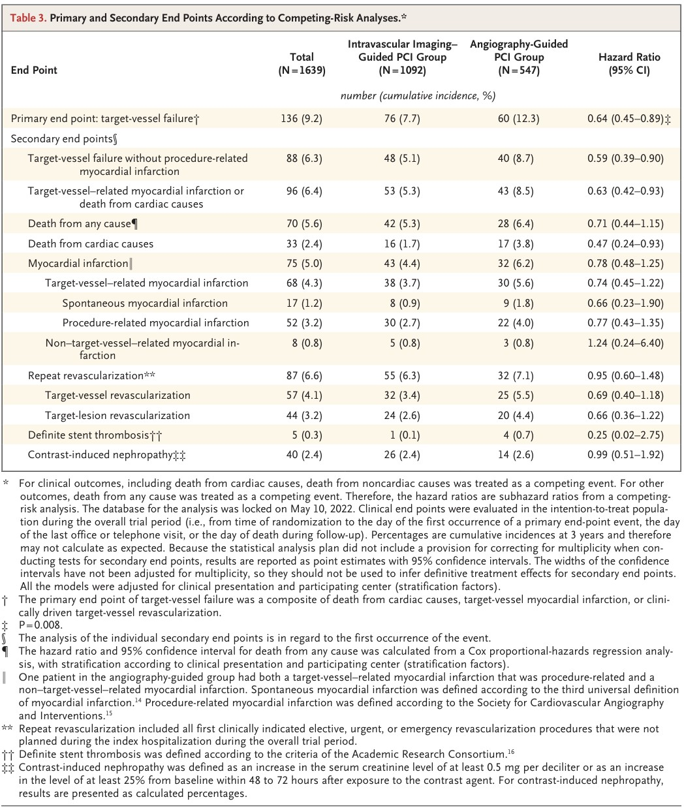
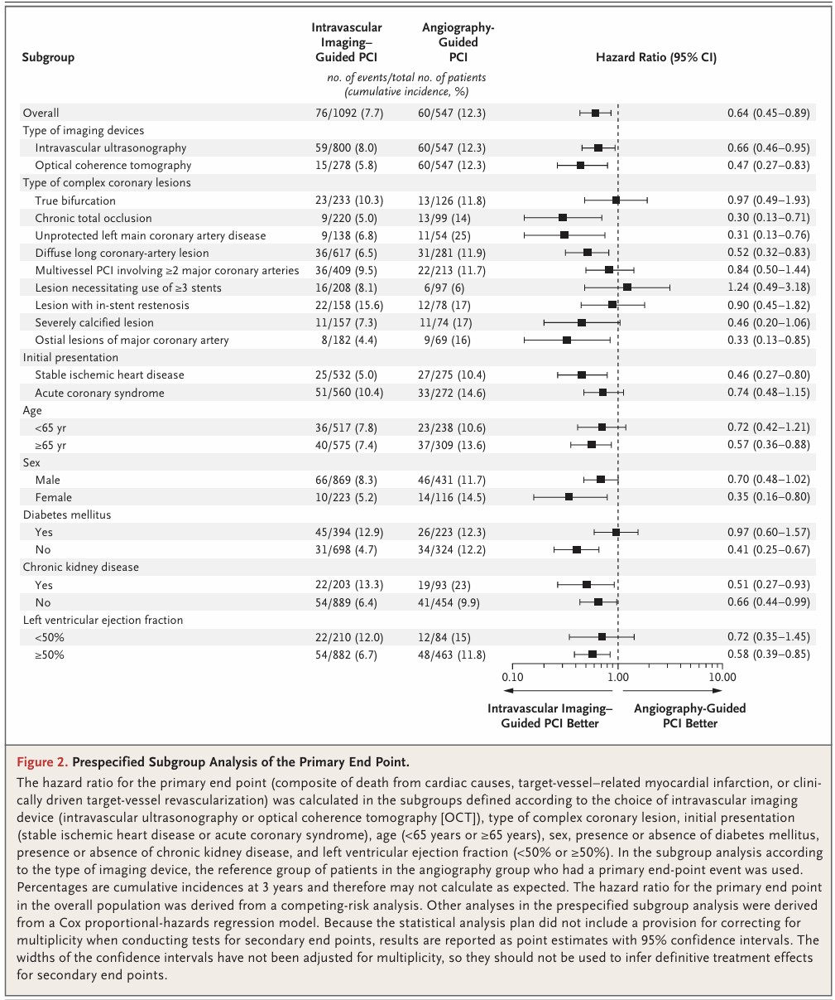

Journal Review [RENOVATE]
IV imaging [Intravascular Imaging]
or Angiography
to Guide Complex PCI
BackGround
BackGround_Domain
CAD : Coronary Heart Disease, a type of heart disease involving the reduction of blood flow to the cardiac muscle due to a build-up of atheromatous plaque in the arteries of the heart.
Plaque : an abnormal accumulation of material in the inner layer of an arterial wall.
PCI : a minimally invasive non-surgical procedure used to treat narrowing of the coronary arteries of the heart found in coronary artery disease.
stent : a tube usually constructed of a metallic alloy or a polymer
DES : drug-eluting stent, deliver a small amount of a drug directly into the blood vessel wall. just enough to allow time for blood vessel embedding and for it to function mechanically to keep a vessel open.

BackGround_Domain 2
angiography : a medical imaging technique performed by injecting a radio-opaque contrast agent into the blood vessel and imaging using X-ray based techniques such as fluoroscopy.
IVUS : a medical imaging methodology using a specially designed catheter with a miniaturized ultrasound probe attached to the distal end of the catheter
OCT : uses coherent near-infrared light to obtain micrometer-level depth resolved images of biological tissue or other scattering media


BackGround_Resaech
DES를 사용한 PCI는 일반 스텐트에 비해 임상 사건 발생률을 현저히 감소시켰으나, 복잡한 관상동맥 병변에 대해서는 그렇지 않은 병변을 가진 환자들에 비해 여전히 나쁜 임상결과를 보입니다.
영상기술은 병변 특성에 대해 유용한 정보를 제공하며, 시술 결과에 대해서도 유용한 정보를 제공합니다. 따라서 혈관 내 영상을 이용한 시술 유도는 복잡한 관상동맥 병변의 PCI 임상 결과를 개선할 가능성이 있습니다.
혈관조영술 대비 혈관내 영상 기술 유도 PCI의 이점에 대해 연구가 없던 것이 아니나, 이전 연구에서는 표본크기가 작거나 특정 병변 하위 그룹에만 국한되는 한계를 가져 확정적인 결론으로 간주되지 않았습니다.
Method
Method_design
다기관, 무작위, 오픈 라벨 시험으로 대한민국 20개 기관에서 수행되었습니다.
독립적인 임상사건 판정 위원회가 시험군 배정 정보를 모르는 상태에서 임상사건을 평가했습니다.
Method_patient
환자군 : 복잡 관상동맥 병변에 대해 PCI를 받는 19세 이상
복잡 관상동맥 : 측지 직경 2.5mm 이상의 진성 분지부 병변, 만성 완전 폐색, 비보호 좌주간부 질환, 예상 스텐트 길이 38mm 이상의 긴 병변, 다혈관 PCI, 3개 이상의 스텐트가 필요한 병변, 스텐트 내 재협착, 심한 석회화 병변, 주요 심장 혈관의 기시부 병변 등등
진단적 관상동맥 조영술 후 => 무작위 배정 & # of 혈관내 영상 유도 : # of 혈관조영술 유도 = 2:1
층화 참여기관별 & 임상 양상(안정형 허혈성 심장질환 및 급성 관상동맥 증후군) 별
Method_patient flow

Method_intervention 1
PCI는 시술자의 재량에 따라 수행되었습니다. 사용된 DES는 생분해성 또는 생체적합성 폴리머 코팅 에베로리무스 방출 스텐트였습니다.
Method_intervention 2
혈관내 영상 유도 Group
IVUS, OCT사용의 선택은 시술자의 재량에 따랐습니다. 스텐트 최적화를 위해 이식 후 필수적으로 영상 장비를 사용해야 했습니다. 최적화되지 않은 경우, 추가확장이나 스텐트 삽입이 권장되었습니다.
스텐트 최적화 기준 : 혈관조영술상 잔여 협착착 지름이 기준 혈관 지름의 10% 미만이며 비좌주간부 병변의 경우, IVUS상 최소 스텐트 면적이 평균 기준 내강 면적의 80% 이상이거나 5.5mm^2 이상/ OCT는 4.5mm^2 이상, 좌주간부 병변의 경우, 원위부는 7mm^2이상 근위부는 8mm^2이상
Method_intervention 2
혈관조영술 유도 Group
스텐트 최적화는 혈관조영술 소견에 근거하여 결정되었습니다.
스텐트 최적화 기준 : 시각적 추정상 잔여협착 지름이 10% 미만이고 혈류를 제한하는 박리가 없는 경우
Method_Trial End Points
-1차 평가변수: 표적혈관실패(TVF)로 심장 원인 사망, 표적 혈관 관련 심근경색 또는 임상적으로 주도된 표적 혈관 재관류술의 복합변수로 정의되었습니다.
-2차 평가변수: 1차 평가변수의 개별 구성 요소, 시술 관련 심근경색을 제외한 표적혈관 실패, 심장원인 사망 또는 표적혈관 심근경색의 복합, 확정적 스텐트 혈전증 등이 포함되었습니다.
why TVF not TLF?
TLF는 표적병변실패로 스텐트 시술 부위(+-5mm)에 문제가 발생한 것입니다.
좁은 범위인 TLF가 아닌 넓은 범위인 TVF를 선택한 이유는 다음과 같습니다.
- 시술의 파급효과 : 영상유도 시술은 앞뒤 혈관 상태를 확인할 수 있어, 추가조치가 가능합니다.
- 임상적 중요성 : 환자입장에서는 스텐트가 망가진 것(TLF)이나 스텐트 주변 혈관이 막힌 것(TVF)이나 똑같이 흉통이 오고 재시술을 받아야 합니다.
Method_statistical analysis
- 표본 크기: 연간 1차 평가변수 발생률을 영상유도 Group(3.6%), 혈관조영술 Group(6%)로, 1종오류 5%로 검정력을 90% 등으로 하여 산출하였습니다. 총 1620명, 그룹별 1080명, 540명이 필요합니다.
- ITT : 배정된 그룹에 따라 전부 분석합니다.
- Fine and Gray : 1차 평가변수 분석에는 비심장성 사망을 경쟁 위험으로 보정하기 위함입니다.
Results
Results_patient
총 1693명의 환자가 무작위 배정되었으며, 영상유도 Group 1,092명 혈관조영술 Group 547명이 배정되었습니다. 영상유도 Group 중 14명은 장비 통과 실패 등의 이유로 영상장비를 사용하지 못했으며, 혈관조영술 Group 중 13명은 시술자의 판단에 따라 영상장비를 사용했습니다. 결과적으로 기저 시점의 임상적 특징은 두 Group이 유사했습니다.
Results_patient

Results_procedural characteristics
표적 병변 및 시술 특징은 두 Group간 균형이 잘 잡혀 있었습니다. 영상유도 Group의 73.3%는 IVUS를, 25.5%는 OCT를 사용했습니다. 영상유도 Group은 비순응성 풍선을 이용한 추가 확장을 더 빈번하게 시행했습니다. 영상유도 Group에서 스텐트 최적화 기준을 충족한 비율은 45.4%였습니다. 혈관조영술 Group에서 스텐트 최적화 기준을 충족한 비율은 58.9%였습니다.
Results_procedural characteristics

Results_primary & secondary end points
- 1차 평가변수:
영상유도 Group(7.7%) 혈관조영술 Group(12.3%) HR 0.64 95% CI 0.45 ~ 0.89 p-value-0.008 - 2차 평가변수:
심장 원인 사망: 영상유도 Group(1.7%) 혈관조영술 Group(3.8%) HR 0.47 95% CI 0.24 ~ 0.93
표적혈관 관련 심근경색 : 영상유도 Group(3.7%) 혈관조영술 Group(5.6%) HR 0.74 95% CI 0.45 ~ 1.22
표적 혈관 재관류술 : 영상유도 Group(3.4%) 혈관조영술 Group(5.5%) HR 0.69 95% CI 0.40 ~ 1.18
Results_endpoint table
Results_하위그룹 분석
why?
고령, 당뇨병, 특정 병변상태 등에 따라 결과가 달라지는지 확인하기 위함입니다.
Results_하위그룹 분석 table
Results_탐색적 분석
why?
영상장비를 사용했느냐보다 영상장비를 통해 최적화를 달성했느냐가 중요함을 보이기 위함입니다.
Results_탐색적 분석 table

Results_안정성 분석
why?
영상장비를 사용하려면 조영제를 더 사용해야 하고, 시술 시간이 길어져 합병증 유발 측면에서 안정성을 비교하기 위함입니다.
Results_안정성 분석 table

Results_conclusion
- RENOVATE-COMPLEX-PCI연구는 복잡 관상동맥 병변 환자에서 혈관 내 영상 유도 PCI가 혈관조영술 유도 PCI에 비해 심장 원인 사망, 표적 혈관 관련 심근경색, 또는 표적 혈관 재관류술의 복합 발생 위험을 유의하게 낮춤을 보여주었습니다. 시술 관련 안전성 사건에는 차이가 없었습니다.
Discussion
Discussion_difference
- 다양한 유형의 복잡 관상동맥 병변만을 대상으로 진행하였습니다.
- 스텐트 최적화 기준을 사전에 명시하고 적용하였습니다.
- 이전 연구들이 주로 재관류술 감소효과를 보인 것과 달리, 본 연구는 심장원인 사망 및 표적혈관 관련 심근경색에서도 효과를 보였습니다.
Discussion_limitation
- 비맹검 방식입니다.
- 영상유도 Group의 스텐트 최적화 비율이 45.4%에 그쳤습니다.
- 본 연구는 동아시아 환자들로만 구성되어 있습니다.
- 비용 분석을 포함하지 않았습니다.